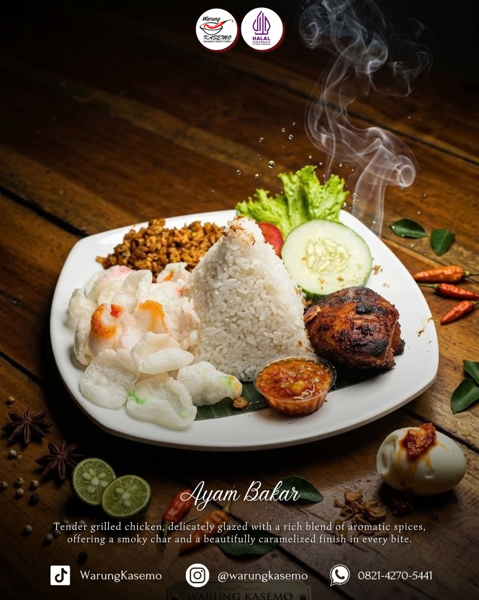
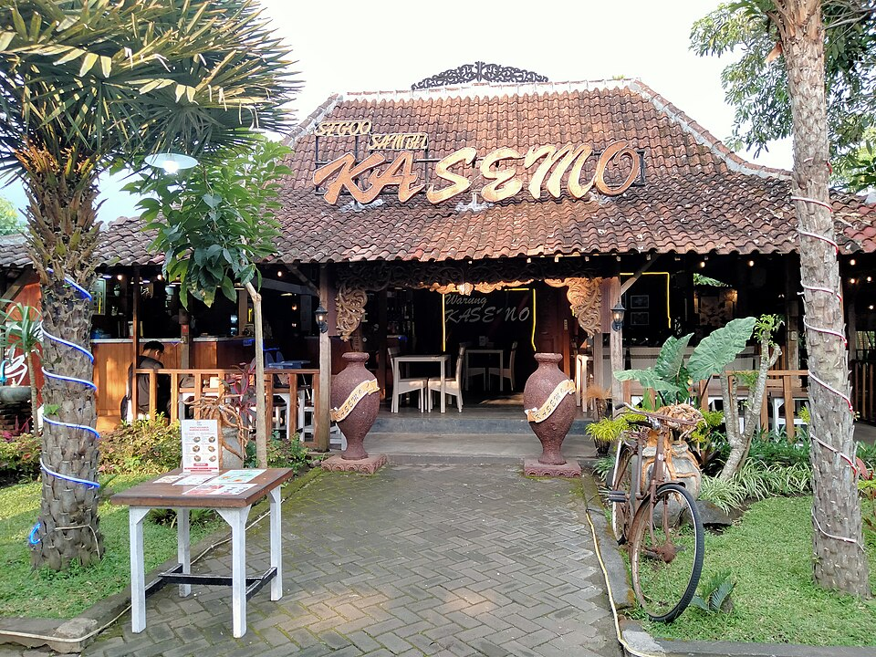
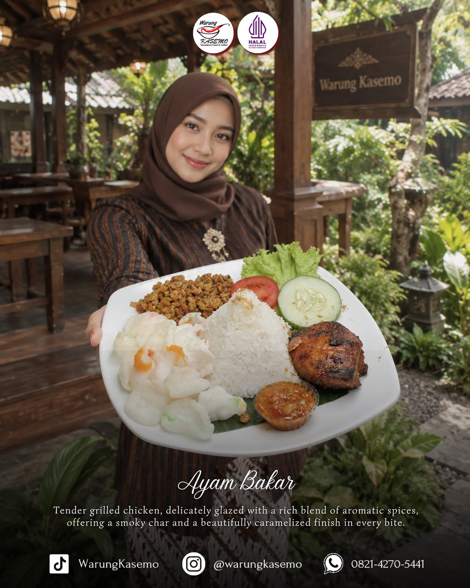

Since 2019 • PanJava Mulyoagung Malang
Rasa Nusantara,
Suasana Nostalgia.
Makan santai di antara joglo, taman hijau, dan sajian Nusantara yang akrab di lidah.
Warung Kasemo
Joglo Jawa untuk makan, berkumpul, dan pulang dengan perut bahagia.
Warung Kasemo berdiri sejak 2019 di kawasan PanJava, Mulyoagung, Dau. Konsepnya memadukan bangunan joglo dan suasana tradisional Jawa dengan sajian yang dibuat relevan untuk keluarga, mahasiswa, hingga acara bersama.
Menu utamanya berangkat dari rasa Nusantara: olahan ayam, ikan, sambal, nasi goreng, camilan, minuman tradisional, sampai kopi. Area hijau dan pilihan tempat duduk membuat pengalaman makan terasa lebih santai, lapang, dan cocok untuk kunjungan keluarga maupun rombongan.
Nusantara FoodCoffeeNuansa JawaFamily & Group

Suasana Kasemo
Vintage Jawa yang nggak terasa dibuat-buat.
Kayu, joglo, taman, dan ruang terbuka jadi bagian dari pengalaman makan. Pilih area sesuai suasana yang kamu mau, dari pusat aktivitas di Joglo Utama sampai area yang lebih santai di Gazebo.
Joglo UtamaJoglo SampingGazeboVintage

Reservasi
Rencanakan meja dan menu sebelum datang.
Form ini adalah demo alur reservasi. Status ketersediaan belum terhubung ke sistem Warung Kasemo. Setelah selesai, detail pesanan akan disiapkan ke WhatsApp reservasi.
DEMO RESERVASI
Datang ke Kasemo
PanJava Mulyoagung, Malang
Jl. TPST, Jetak Lor, Mulyoagung, Kec. Dau, Kabupaten Malang, Jawa Timur 65151
Buka Setiap Hari08.00 - 22.00
Reservasi0821-4270-5441
Travel0822-4468-5071
⌖
WARUNG KASEMO
Mulyoagung • Dau • Malang